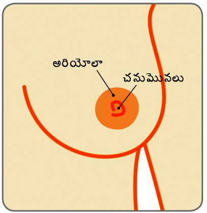
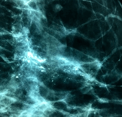

రొమ్ము

రొమ్ము
చనుమొన

మార్టినా నవ్రతిలోవా, స్పోర్ట్స్ దిగ్గజం, తొమ్మిదిసార్లు వింబుల్డన్ సింగిల్స్ ఛాంపియన్కు డక్టల్ కార్సినోమా ఇన్ సైట్ (డిసిఐఎస్) ఉన్నట్లుగా నిర్ధారించబడిం, ఇది రొమ్ము క్యాన్సర్. 2010లో ఆమెకు 53 సంవత్సరాలు, ఆమె వరసగా నాలుగు సంవత్సరాలపాటు మామ్మోగ్రామ్ చేయించుకోకుండా విడిచిపెట్టారు. ఆమెకు 40 సంవత్సరాల వయస్సులో ప్రతి ఏడాది మామ్మోగ్రామ్లు చేయించుకోవాలని సలహా ఇవ్వబడింది
నాలుగేళ్లపాటు నేను మామ్మోగ్రామ్ చేయించుకోలేదు.’’ అని ఆమె ఒక ఇంటర్యూలో పేర్కొంది. ప్రతి ఒక్కరూ కూడా బిజీగా ఉంటారు, అయితే, అది మినహాయింపు కారాదు. నా శరీరాకృతి సరిగ్గానే ఉంది మరియు నేను సక్రమంగానే తింటున్నాను అయితే ఇది నాకు జరిగింది. మరో ఏడాది దాటితే నేను పెద్ద సమస్యలో చిక్కుకుపోయే దానిని.’’ అదృష్టవశాత్తు, ఎంతో ముందుగా క్యాన్సర్ గుర్తించబడింది. ఆమె వైడ్ లోకల్ ఎక్సైషన్( లంపెక్టమీ)ని మరియు మే 2010లో రేడియేషన్ థెరపీని పూర్తి చేస్తుంది.
షెర్లీ క్రౌన్ ప్రముఖ సింగర్ మరియు తొమ్మిదిసార్లు గ్రామీ అవార్డు విజేత మరియు హాలీవుడ్లో సుపరిచితమైన నటికి కూడా మామ్మోగ్రామ్ స్క్రీనింగ్ సమయంలో ముందస్తు ఇంపాల్పాలబుల్ రొమ్ము క్యాన్సర్ ఉన్నట్లుగా నిర్ధారించబడింది.
డిసిఐఎస్ అంటే ఏమిటి?

రొమ్ము అనేది డక్ట్లు, లోబ్యూల్స్ మరియు కొవ్వు కణజాలాలతో రూపొందించబడుతుంది. డక్టల్ కార్సినోమా ఇన్ సైటు (డిసిఎఎస్) అనేది రొమ్ము క్యాన్సర్ యొక్క ముందస్తు రూపంక్యాన్సర్ కణాలు డక్ట్ల్లోపల ఉంటాయి (చనుమొనలకు పాలును తీసుకెళ్లేవి). ఇది క్యాన్సర్ పూర్వ పరిస్థితి, దీనిలో పాలగ్రంధుల్లో ఉండే క్యాన్సర్ కణాలు సాధారణంగా ఉండే పరిసర రొమ్ము కణజాలంలోనికి వ్యాప్తి చెందే సామర్థ్యాన్ని కలిగి ఉండవు
డిసిఐఎస్లు ఎంత సహజంగా వస్తాయి?
అమెరికన్ క్యాన్సర్ సొసైటీ ప్రకారం, అమెరికాలో ప్రతిసంవత్సరం 60,000 డిసిఐఎస్ కేసులు నివేదించబడతాయి( ప్రతి సంవత్సరం రొమ్ము క్యాన్సర్ ఉన్నట్లుగా నిర్ధారించబడ్డ ప్రతి 5 కేసుల్లో ఒక్కటి) భారతదేశంలో ఇండియన్ కౌన్సిల్ ఆఫ్ మెడికల్ రీసెర్చ్(ఐసిఎమ్ఆర్) ప్రకారం, ప్రతి ఏడాది సుమారు 150,000 కొత్త రొమ్ము క్యాన్సర్ కేసులు నిర్ధారించబడుతున్నాయి. అయితే,డిసిఐఎస్ యొక్క ఘటనలకు సంబంధించి కచ్చితమైన గణాంకాలు లేవు. అవగాహన లోపించడం మరియు స్క్రీనింగ్ కార్యక్రమాలు లేకపోవడం వల్ల, మన దేశంలోనికి రొమ్ము క్యాన్సర్ల్లో 60శాతం కేసులు అడ్వాన్డ్ దశలో ఉంటున్నాయి. భారతదేశంలో ప్రతి పది నిమిషాలకు ఒక మహిళకు రొమ్ము క్యాన్సర్ వస్తోంది
డక్టల్ కార్సినోమా ఇన్ సైట్ (డిసిఐఎస్) అంటే ఏమిటి?
డక్టల్ కార్సినోమా ఇన్ సైట్ (డిసిఐఎస్)లో సాధారణంగా ఎలాంటి రోగలక్షణాలు కనిపించవు. డక్టల్ కార్సినోమా ఇన్ సైట్ (డిసిఐఎస్)ల్లో 80% పైగా కేసులు మామోగ్రాఫ్ స్క్రీనింగ్లో బయటపడతాయి. చను మొనల నుంచి విడుదల అయ్యే రక్తంలో డిసిఐఎస్లుంటాయి, చనుమొనలపై దద్దుర్లు లేదా అరుదుగా రొమ్ములో గడ్డలు కనిపిస్తాయి..
డక్టల్ కార్సినోమా ఇన్ సైట్ (డిసిఐఎస్) ఏవిధంగా గుర్తించబడుతుంది?
రొటీన్ రొమ్ము స్క్రీనింగ్ మదింపులో డిసిఐఎస్ గుర్తించబడుతుంది. మదింపులో స్పెషలిస్టు ద్వారా రొమ్ము పరీక్ష, రొమ్ము ఇమేజింగ్ (రెండు రొమ్ముల యొక్క మామోగ్రామ్ మరియు రొమ్ముల యొక్క ఆల్ట్రాసౌండ్) మరియు నీడిల్ కోర్ బయాప్సీ (ట్రిపుల్ అసెస్మెంట్).

డిసిఐఎస్ చాలా అరుదుగా ముద్ద వలే ఉంటుంది, క్లినికల్ రొమ్ము క్యాన్సర్ సాధారణంగా ఉపయోగపడదు. మామ్మోగ్రామ్ అనేది రొమ్ము స్క్రీనింగ్ కొరకు చక్కటి ప్రమాణం, సాధారణంగా ఇది అసాధారణంగా కనిపించే మైక్రో కాల్సిఫికేషన్లను చూపుతుంది – చిన్నపాటి కాల్షియంలు మామ్మోగ్రామ్ మీద తెల్లటి చుక్కల వలే కనిపిస్తుంది.. అన్ని మైక్రోకాల్సిఫికేషన్లు క్యాన్సర్ని కలిగించవు అనే విషయాన్ని గుర్తుంచుకోవాలి. డిసిఐఎస్ గుర్తించడం కొరకు బహుళ విభాగాలకు చెందిన బృందానికి అవసరమైన నైపుణ్యం మరియు జాగరూకత అవసరం..


చివరగా, రోగనిర్ధారణ చేయడం కొరకు, కోర్ నీడిల్ బయాప్సీ చేయడం ద్వారా చిన్న కణజాలపు ముక్క తొలగించబడుతుంది, దీనిని స్థానిక అనిస్థీషియా పరిస్థితుల్లో స్టీరియోటోటిక్ గైడెన్స్( మామ్మగ్రాఫ్ సహాయంతో) ఇది చేయబడుతుంది. నీడిల్ బయాప్సీ యొక్క మరో రకం, ఫైన్ నీడిల్ యాస్పిరేషన్ బయాప్సీ(ఎఫ్ఎన్ఎసిగ), తప్పు తోవ రొమ్ములోని కదిలే గడ్డలు కొరకు మరియు డిసిఐఎస్ ద్వారా హానికర క్యాన్సర్ కానివిధంగా నిర్ధారించబడ్డ వాటి కొరకు సాధారణంగా ఉపయోగిస్తారు. నీడల్ కోర్ బయాప్సీ ఎంతో కచ్చితంగా ఉంటుంది.

కొన్నిసమయాల్లో, మైక్రోకాల్సిఫికేషన్లు చాలా చిన్నవిగా మరియు సన్నగా ఉన్నప్పుడు, రోగనిర్ధారణ చేసేటప్పుడు మైక్రో కాల్సిఫికేషన్లను స్థానికీకరించడం కొరకు ఒక ఫైన్ గైడ్ వైరును ఉపయోగించి సాధారణ అనిస్థీషియా పరిస్థితుల కింద బయాప్సీ నిర్వహించబడుతుంది.
డిసిఐఎస్ ఏవిధంగా గ్రేడ్ చేయబడుతుంది మరియు దాని యొక్క ప్రాముఖ్యత ఏమిటి?
మైక్రోస్కోప్ కింద కనిపించే కణాల యొక్క రూపును బట్టి మరియు ఎంత వేగంగా ఈ కణాలు విభజించబడతాయనే దానిని బట్టి డిసిఐఎస్ గ్రేడింగ్ చేయబడుతుంది. దీనిని హై-ఇంటర్మీడియెట్ గ్రేడ్ మరియు లో గ్రేడ్ డిసిఐఎస్గా గ్రేడ్ చేయబడుతుంది. డిసిఐఎస్కు చికిత్స చేయకుండా విడిచిపెట్టినట్లయితే, క్యాన్సర్ కణాలు డక్ట్ల నుంచి పరిసరాల్లో ఉండే రొమ్ము కణజాలాలకు అభివృద్ధి చెందే సామర్థ్యాన్ని పొందుతాయి, దీనిని హానికర రొమ్ము క్యాన్సర్గా పేర్కొంటారు. హై గ్రేడ్ డిసిఎఎస్తో పోలిస్తే లో గ్రేడ్ డిసిఐఎస్ హానికర రొమ్ము క్యాన్సర్గా మారే సంభావ్యత చాలా తక్కువగా ఉంటుంది.
డక్టల్ కార్సినోమా ఇన్ సైట్ (డిసిఐఎస్)కు ఏవిధంగా చికిత్స చేయబడుతుంది?
హానికర రొమ్ము క్యాన్సర్ అభివృద్ధి చెందకుండా నిరోధించడం కొరకు రొమ్ములోని అన్ని డిసిఐఎస్ను తొలగించడమే చికిత్స యొక్క లక్ష్యం. డక్ట్ల్లో డిసిఐఎస్ యొక్క పరిధి మరియు డిసిఐఎస్ యొక్క గ్రేడ్ వంటి కారకాలపై చికిత్స ఆధారపడి ఉంటుంది
ఎ. శస్త్రచికిత్స 1. రొమ్ము సంరక్షణ శస్త్రచికిత్సరొమ్ము శస్త్రచికిత్స అనేది డిసిఐఎస్ యొక్క మొదటి లైన్ చికిత్స. ఒకవేళ డిసిఐఎస్ లోకలైజ్ కావడం లేదా రొమ్ములోనికి ఒకే ప్రాంతానికి పరిమితం అయినట్లయితే, రొమ్ము సంరక్షణ శస్త్రచికిత్స చేయబడుతుంది. రోగి లేదా డాక్టర్ ద్వారా క్యాన్సర్ అనుభూతి చెందరు కనుక, స్థానిక అనిస్థీషియా పరిస్థితుల్లో రొమ్ములోని అసాధారణ ప్రాంతాలను కచ్చితంగా గుర్తించడం కొరకు ఫైన్ గైడ్ వైరు చొప్పించబడుతుంది. ఇది ఒక గైడ్ వలే పనిచేస్తుంది మరియు పరిసరాల్లో ఉండే సాధారణ రొమ్ము కణజాలం యొక్క ప్రాంతాలతోపాటుగా మాసెక్టమీ అనేది ఒక శస్త్రచికిత్స ఎంపిక, యొక్క ప్రాంతాన్ని శస్త్రచికిత్స చేసే వైద్యుడు తొలగించగలుగుతాడు( గైడ్ వైర్ అసిస్టెడ్ వైడ్ లోకల్ ఎక్సిక్యూషన్)
రొమ్ము సంరక్షణ శస్త్రచికిత్స -
విస్తృతంగా స్థానిక ప్రాంతం తొలగింపు


డిసిఐఎస్ రొమ్ములోని అధిక భాగాన్ని ప్రభావితం చేసినట్లయితే, లేదా రొమ్ము సంరక్షణ శస్త్రచికిత్స ఉపయోగించి prognosis చుట్టూ ఉండే సాధారణ కణజాలం యొక్క స్పష్టమైన సాధారణ కణజాల ప్రాంతాన్ని తెలుసుకోవడం కష్టంగా ఉన్నప్పుడు, లేదా రొమ్ముల్లో ఒకటి కంటే ఎక్కువ ప్రాంతాల్లో డిసిఐఎస్ ఉన్నట్లుగా నిర్ధారించబడినట్లయితే మాసెక్టమీ అనేది ఒక శస్త్రచికిత్స ఎంపిక. ఒకవేళ మాసెక్టమీ సిఫారసు చేయబడినట్లయితే, రొమ్ము తొలించడానికి సంబంధించిన మానసిక మరియు భావోద్వేగ భయాలను కనిష్టం చేయడం కొరకు ప్రాథమిక శస్త్రచికిత్స వలే అదే సమయంలో వెంటనే రొమ్ము పున:నిర్మాణం ఆప్షన్ని ఎంచుకోవాల్సి ఉంటుంది. సాధారణంగా, డిసిఎస్ నాళాల నుంచి రొమ్ము కణజాలాలకు విస్తరించదు కనుక, చంకల్లో ఉండే లింఫ్ గ్రంధులను తొలగించాల్సిన అవసరం లేదు.
రొమ్ము తొలగింపు -
మాస్టెక్టోమి

సౌజన్యం: బ్రెస్ట్ క్యాన్సర్ కేర్, యుకె


శస్త్రచికిత్స అనంతరం తదుపరి చికిత్స అవసరం అవుతుంది. దీనిని ఎడ్జువాంట్ థెరపీగా పేర్కొంటారు, దీనిలో రేడియోథెరపీ మరియు హార్మోన్ థెరపీలుంటాయి.
రేడియో థెరపీఒకవేళ రొమ్ముసంరక్షణ శస్త్రచికిత్స చేసినట్లయితే, స్టాండర్డ్ ఎడ్యువాంట్ ట్రీట్మెంట్ ఆపరేట్ చేయబడ్డ రొమ్ముకు ఆరువారాల బాహ్య బీమ్ రేడియోథెరపీ ద్వారా అందించబడుతుంది. ఒకవేళ రోగికి మాసెక్టమీ చేసినట్లయితే, రేడియోథెరపీ అవసరం లేదు.
హర్మోన్ థెరపీఒకవేళ డిసిఐఎస్ యొక్క రకం హార్మోన్ ఆస్టోజన్ యొక్క పెరుగుదలపై ఆధారపడి నట్లయితే( ఆస్ట్రోజన్ రెసెప్టార్ పాజిటివ్) అయితే, టామాక్సిఫెన్ రూపంలో హార్మోన్ థెరపీ అందించబడుతుంది. డిసిఎఎస్ యొక్క గ్రేడ్ వంటి ఇతర కారకాలపైన కూడా ఇది ఆధారపడి ఉంటుంది.
కీమోథెరపీడిసిఎఎస్కు చికిత్స చేయడానికి కీమోథెరపీ అవసరం లేదు.
డిసిఐఎస్ ప్రాణాంతకమా మరియు మరియు డిసిఐఎస్ యొక్క రోగనిర్ధారణ ఏమిటి?
లేదు, క్యాన్సర్ పాల డక్ట్లను దాటి ఏదైనా సాధారణంగా ఉండే పరిసర రొమ్ము కణజాలాలకు వ్యాప్తి చెందదు కనుక , డిసిఐఎస్ అనేది ప్రాణాంతకం కాదు. డిసిఐఎస్తో ఉన్న మహిళల్లో దీర్ఘకాలం మనుగడ సాగించే రేటు అద్భుతంగా ఉంది, ఇది సుమారు 100% వరకు(98 నుంచి 99%) వరకు ఉంటుంది.